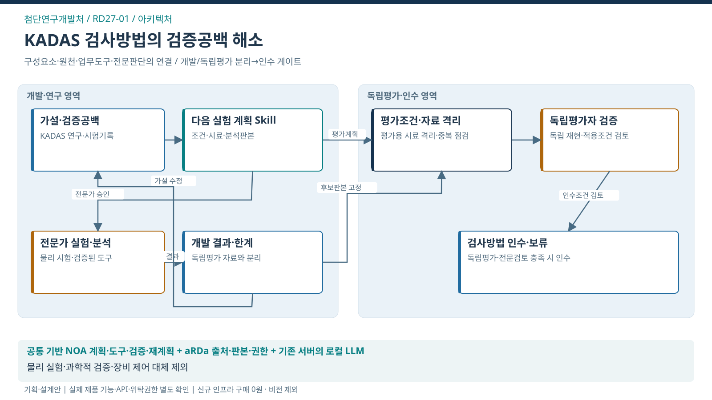

아키텍처 · KADAS 검사방법의 검증공백 해소
이 도식의 목적 · 업무 원천·NOA Skill·도구·공식 처리·결과의 연결

도식 원본 확대 · SVG · PPT 삽입용 PNG · 1600×900


핵심 해석
- 대표 사건: 가설–차량/시료–실험–분석판본
- 처별 고유 로직: 개발/독립평가 분리→인수 게이트
- 조건 분기: 독립평가·적용 근거 충분? → 충족 시 전문 검토·현장 인수 / 미충족 시 가설 수정·추가 실험 계획
- 공식 결과: 적용조건·한계·운영조건 인계
- 책임 경계: 물리 실험·과학적 검증·장비 제어 대체 제외
- 검증 상태: 실제 제품 기능·API·위탁권한·도입효과 미확정
- 승인 경계: 공식 결정의 효력은 AI가 변경하지 않음. 근거·계획 변경 시 영향받는 후속 실행 승인 재사용 차단·재검토
- 도식 경계: NOA 내부의 전문업무 관련 노드는 요청·인계·결과 참조. 물리 시험·보수·공식 판정은 외부 전문가·권한자의 실제 수행
전체 아키텍처
| 계층 | 구성·역할 | 확인할 경계 |
|---|---|---|
| 처별 업무공간 | 검사기술 연구자·시험 전문가·독립평가자의 사건·근거·계획·결과 화면 | 본인/담당 사건·전문검토·공식 결과의 공개범위 |
| NOA 업무수행 | 목표·완료조건 → 계획 → 도구 → 결과검증 → 재계획 | 실제 제품 기능·TS 적용·실행승인은 각각 확인 |
| aRDa·지식 근거 | 자료·판본·원문 위치·이용범위·확정지식 참조 | 제품 문서중앙화와 새 관계·판본 기능의 구현범위 대조 |
| 연계·정형 검증 | 기존 KADAS 연구·시험기록과 검증된 분석도구의 결과 | 실제 API는 미확인; 파일 반입이면 기준시점 표시 |
| 전문·공식 처리 | 연구자·시험·통계 전문가·첨단검사전략처·기존 연구 책임자 | 물리 시험·정비·안전판정·공식 책임 유지 |
| 기관 공통 ERP | 필요한 사업비·자원 조회 또는 승인된 전표 초안 후보 | 이 처 대표과업의 필수 경로로 강제하지 않음 |
서비스 흐름
| 순서 | 수행과업 |
|---|---|
| 1 | 목표 판별상태·현재 근거·경쟁 가설을 구성 |
| 2 | 자료 결손·다음 실험 후보와 우선 근거 제안 |
| 3 | 전문가가 승인한 분석 요청과 반환 결과 검증 |
| 4 | 가설 수정·독립평가·검사방법 인수조건 연결 |
데이터 흐름과 원장 책임
| 방향 | 주요 데이터 | 원장·품질 책임 |
|---|---|---|
| 원천 → 허용 반입 | study_id / hypothesis_id / specimen_id / 차량·시험·환경 판본 / run_id | 원천 제공자: 실제 대상·판본·시점. NOA: 식별·결손 표시 |
| 근거 → 업무계획 | 출처·원문 위치·관계 후보·적용조건 | AI 추론과 담당자 확정조건을 분리 |
| 업무계획 → 도구 | case_id·tool_id·purpose·approval_ref·version | 허용된 조회/분석 계약·현행 권한 검증 |
| 도구/전문가 → 검토 | 값·단위·시각·자료 결손·오류·검증결과 | 정형값은 코드/규칙으로 검산; 전문검토의 근거 보존 |
| 공식 결과 → 사건 종료 | 적용조건·측정법·검증결과·한계·운영조건을 갖춘 검사방법 인수자료가 전문 검토됨 | 공식 원천·담당자 결과를 참조하며 자체 생성 문서로 대체하지 않음 |
| 검토 결과 → 조직지식 | 검수된 산출물·정정·적용범위 | 업무 승인과 조직지식 승격 승인을 별도 적용 |
연계 명세의 출발점
설계용 요청은
case_id, source_ref, version, purpose, action, approval_ref, idempotency_key를 사용함.반환값은
source_record_id, observed_at, data_status, execution_status, error를 구분함.이는 실제 TS API 사양이 아니며 현업·원천 운영자와 계약을 확정해야 함.
쓰기가 필요하지 않은 단계에는 쓰기 권한·중복키를 강제로 부여하지 않음.
반복 기록을 독립표본으로 계산하거나 AI 생성자료를 실측으로 채우지 않음.
새 장비·비전모델 개발, 물리 실험 자동제어, 검사방법의 과학적 검증 대체, 독립 R&D 사업 편성은 연결도구에서 제외함.
원문 내 명령은 데이터로 취급함.
비전·영상 판독과 장비 투자 없이 텍스트·구조화된 기존 결과를 사용하며, 계측 원형의 분석은 기존 전문도구가 담당함.
공통 기능과 추가 개발
- 계획·승인·권한·결과미확인·재시도는 공통 요구를 참조함.
- 이번 처의 추가분은 가설–차량/시료–실험–분석판본 관계, 기존 평가기능 1개·확인조건 1~2개·허용된 결과자료의 지식·분기·원천 연계·독립 검증임.
- 제품 재사용 여부는 실행 증거를 확보한 뒤 확정함.